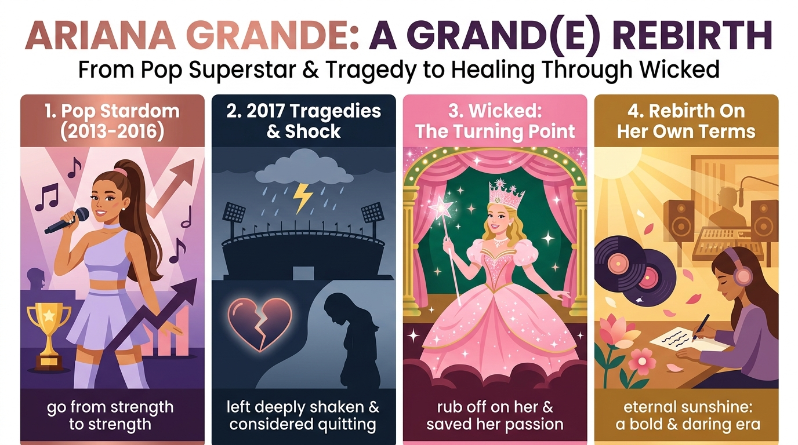

亞莉安娜 20 歲推出首張專輯《Yours Truly》即大賣，單曲〈Problem〉更使人氣暴漲，演藝事業持續攀升。
go from strength to strength2017 年演唱會恐攻奪走 22 命、摯友過世、婚約突然告終，重創讓她極度震驚，甚至考慮永遠退出樂壇。
considered quitting / left shaken2022 年拍攝《魔法壞女巫》時原想放棄音樂，但角色 Glinda 的高度自信感染了她，讓她決定按自己的步調繼續創作。
may have ended up / rub off on她拋下累人的長途巡演與媒體活動，專注創作過程，接連推出冠軍專輯與大膽新作《petal》，喜悅開啟新紀元。
leave behind / bold & daring eraAfter + V-ing 分詞構句After she released...，前後主詞皆為 Ariana Grande，故省略主詞並將動詞改為現在分詞 releasing。in the middle of + N.；「勢不可擋的」字構為 un-（不）+ stop + -able（可……的）= unstoppable。consider + V-ing（考慮做某事）consider 後接動作時，只可接動名詞 quitting，嚴禁寫成 ❌ considered to quit！award-winning（N-Ving）。for good（= permanently / forever）。make + O. + 原形 Vmade her change her mind 中，使役動詞 make 後接原形動詞 change；who is named Glinda 可簡化為過去分詞片語 named Glinda。change one's mind。take to screen(s)（登上銀幕）take to + N. 有「開始從事、踏入、走向」之意，take to screens across the world 即「登上全球大銀幕」。from a young age 或 from an early age。cause + O. + to Vmake + O. + V 區分：cause 不是使役動詞，受詞補語必須加 to grow！a commercial hit（hit 作名詞指「轟動一時的成功作品」）。go from strength to strength（蒸蒸日上）not A but B 表示「不是 A 而是 B」。tragedy strikes（過去式 struck，等同於 occurred）。while + 過去進行式, 過去簡單式was playing 描繪持續進行的演唱會背景，搭配過去簡單式 set off 表達突然發生的爆炸事件。set sth off 或 set off sth。leave + O. + O.C. 的被動 be left + p.p.It all left Grande deeply shaken，改成被動 Grande was left deeply shaken（過去分詞 shaken 表內心感到震驚）。pass away。come to a sudden end。while filming... 與 give up onwhile (she was) filming Wicked 保留連接詞 while 的分詞構句；give up on + N. 強調「對某事物不再抱希望而放棄」。bounce back (from...)；「壓力不斷累積」用不及物動詞 the pressure was building。may have + p.p. ＋ end up + V-ingmay have ended up 推測過去已經發生的結果。end up + V-ing（最終變成做某事）後面務必接動名詞 saving！A rub off on B，介系詞固定用 on！leave sth behind（拋下、留下）the days of long tours and tiring press events）時，可將副詞 behind 提前至受詞前，寫成 leave behind + 長受詞。on one's (own) terms（注意 terms 必加 s）。describe A as Bwhich she has described as being "full of life" 中，關係代名詞 which 代替先行詞 a daring new work，作 described 的受詞，搭配介系詞 as（將……描述為……）。drop（如 dropped in March 2024）。consider 作「考慮」的用法
表示「仔細思考、認真考慮」時，後面若接動詞，只能用動名詞 V-ing。同類必考動詞口訣：enjoy / mind / finish / practice / consider / quit / give up + V-ing。
go from strength to strength字面意為「從一個優勢走向另一個優勢」，引申為個人事業、表現或公司「越來越成功、持續進步、不斷壯大」。
leave + O. + O.C. 使處於某狀態
被動公式：S. + be left + O.C.。課文 was left deeply shaken 用過去分詞 shaken 表示「（內心被震懾）深受震驚與打擊」。
may + have + p.p. 對過去的推測
• may + 原形 V：對「現在或未來」的可能性推測。
• may + have + p.p.：對「過去已發生事件」的肯定推測。
• 搭配 end up + V-ing：最終結果變成……。
rub off (on sb) 影響、感染某人
原意為「摩擦掉色沾到別人身上」，引申為「A 的特質、自信、態度或壞習慣潛移默化感染了 B」。切記介系詞搭配 on！
leave sb/sth behind 拋下；遺落
• 語意 ①（主動拋下過去／離開某人）：課文中拋下漫長巡演的日子。
• 語意 ②（不小心遺落物品）：把東西忘在某地沒帶走。
a（一個）+ ward（看守／保衛）→ 保衛國家有功，獲頒一座金光閃閃的「獎項（award）」！win / receive an award（獲獎）、an award-winning singer（獲獎歌手）quit（少 e，退出離開）vs. quiet（安靜的）vs. quite（相當地）。辭職（quit）時把 e 留在公司就走了！quit + V-ing（戒除／停止做某事）、quit music for good（永遠退出樂壇）b 被炸飛消音了（同 climb、thumb）！set a bomb off / set off a bomb（引爆炸彈）、a bomb attack（炸彈攻擊）stad- = stand（站立看台）+ -ium（大型場所字尾，如 museum / aquarium）→ 幾萬人站立歡呼的「大型體育場」！in the stadium（在體育場內）、a packed stadium（擠滿觀眾的體育館）engage（訂婚、吸引、參與）+ -ment（名詞字尾）→ 兩人許下終身承諾的「婚約（engagement）」。an engagement ring（訂婚戒指）、end / break off an engagement（解除婚約）ad-（向內）+ mit（送出、放行）→ 把心裡隱藏的實話放出來，就是「坦承、承認（admit）」！admit (to) + V-ing / N.（承認做過某事）、admit + that 子句create（創造）→ creative（有創意的）→ creativity（創造力）→ creator（創作者）。the creative process（創作過程）、creative thinking（創意思考）main / primary focus（主要重心）、shift one's focus to...（將重心轉移到……）bold（有魄力大膽的、字體粗體 B）vs. bald（禿頭的 `a` 像光頭）vs. cold（冷的）。a bold decision / move / step（大膽的決定／舉動）How dare you! 的 dare（敢於挑戰）+ -ing → 敢於突破常規、富冒險精神的「大膽創新（daring）」！a daring new work（大膽創新的新作）、a daring rescue / climb（勇敢的救援／攀登）un-（否定：不）+ stop（停止，雙寫 p）+ -able（能夠……的）→ 沒有人能攔得住的「勢不可擋」！popularity `[ˌpɑpjəˈlærəti]` *n.* 人氣、受歡迎程度（grow in popularity 人氣攀升）tragedy strikes；從悲劇中像皮球一樣彈回來振作則是 bounce back！ironically（諷刺的是）、era（時代、紀元）、delight（使喜悅）go from strength to strength 為本課核心片語，意為「越來越成功、持續進步、蒸蒸日上」。(A) 不時地 (C) 左右搖擺 (D) 從頭到腳。leave + O. + O.C.（使她深受震驚）」：Three tragedies (S.) + left (V.) + her (O.) + deeply shaken (O.C.)，對應課文被動句 Grande was left deeply shaken。considered）：consider（考慮）後接動作時，必須使用動名詞 V-ing（considered quitting music），不可接不定詞 to quit。may + have + p.p.，故為 may have ended up (+ saving)。A rub off on B 表示「A 的特質或習慣感染／影響了 B」，介系詞固定用 on。stadium）」內為國家隊加油。(A) 婚約 (C) 悲劇 (D) 人氣。daring）」決定。admitted）」犯案。on one's (own) terms 為固定片語，意為「按照某人自己的方式、條件或步調」。leave sth behind 意為「留下、遺留某物」，句意為請確保不要在步道上留下任何垃圾。leave + O. + O.C. 的平行結構：第一個受詞補語為介系詞片語 without power，第二個受詞 many windows 與「打破」為被動關係，故受詞補語必須用過去分詞 broken！end up + V-ing（最終結果變成……）後面必須接動名詞 making。Grand(e) 是雙關語（pun），一方面指亞莉安娜的姓氏 Grande，另一方面指形容詞 grand（宏大的、非凡的），象徵她經歷低潮後的非凡重生。on her own terms）繼續音樂事業，拋下漫長巡演與累人的媒體宣傳（leave behind the days of long tours and tiring press events），把重心放在創作過程（the creative process would be her focus）。